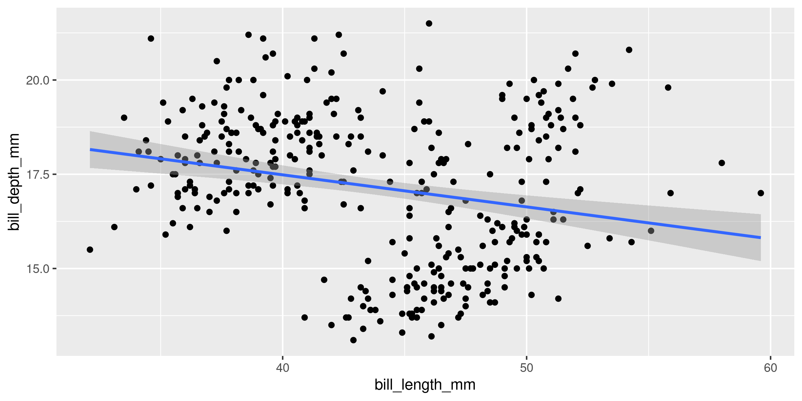
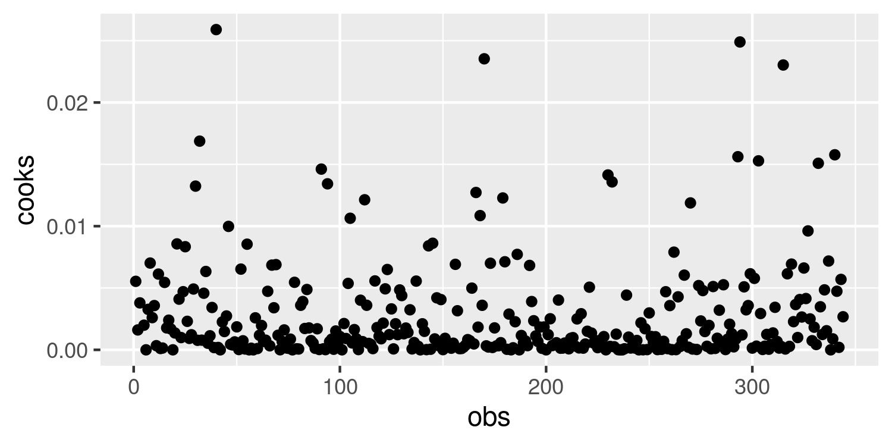
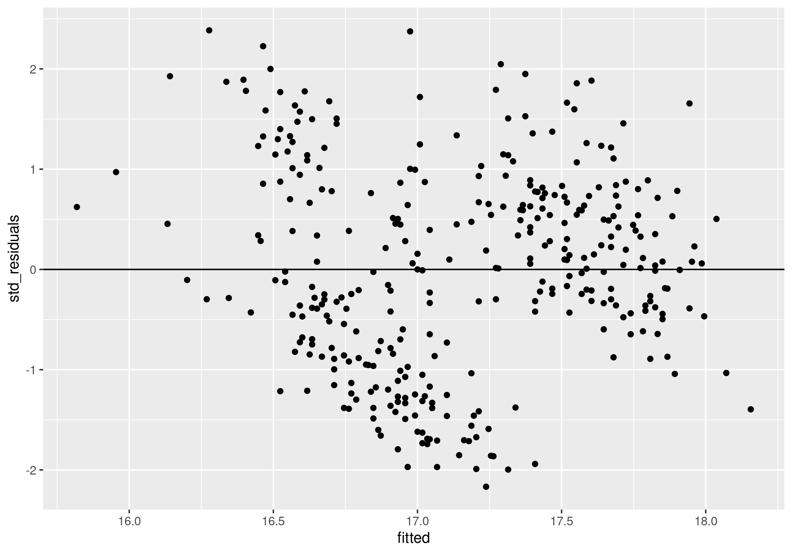
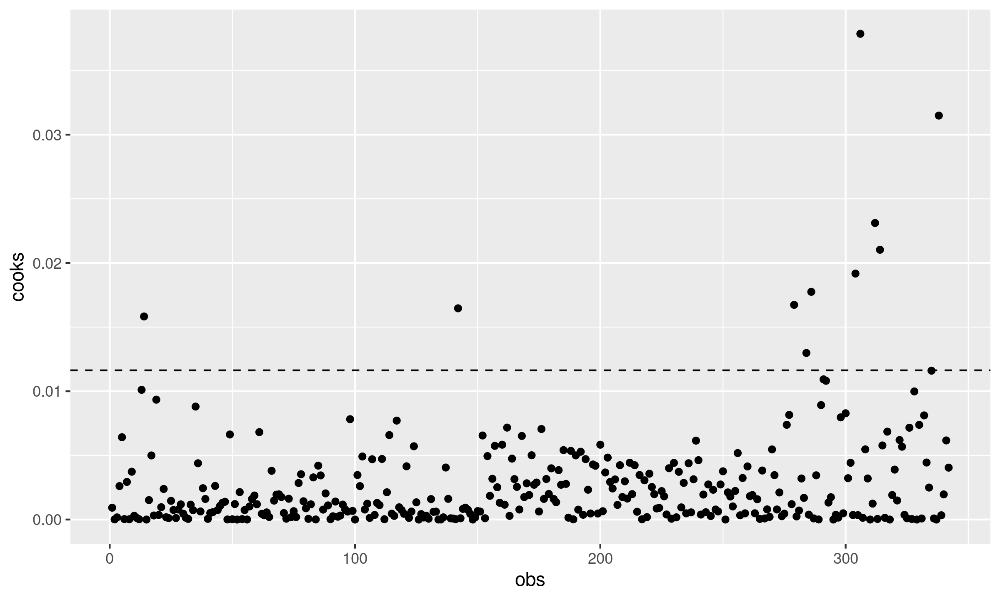

6 Practice Answers
6.1 Regression models
- Plot the relationship
ggplot(data = penguins, aes(x = bill_length_mm, y = bill_depth_mm)) +
geom_point() +
stat_smooth(method = "lm")
Looks like there’s definitely a relationship
- Create a linear regression model
m <- lm(bill_depth_mm ~ bill_length_mm, data = penguins)- Check your model diagnostics
d <- data.frame(residuals = residuals(m),
std_residuals = rstudent(m),
fitted = fitted(m),
cooks = cooks.distance(m))
d <- mutate(d, obs = 1:n())
d## residuals std_residuals fitted cooks obs
## 1 1.138863760 0.593436732 17.56114 9.242306e-04 1
## 2 -0.127127728 -0.066197393 17.52713 1.070470e-05 2
## 3 0.540889297 0.281591060 17.45911 1.682589e-04 3
## 5 1.534812686 0.801244501 17.76519 2.609482e-03 4
## 6 3.055868016 1.597347781 17.54413 6.414686e-03 5
## 7 0.221859504 0.115559609 17.57814 3.639240e-05 6
## 8 2.047365888 1.068025427 17.55263 2.932579e-03 7
## 9 0.113757356 0.059461671 17.98624 2.228931e-05 8
## 10 2.885425474 1.506315724 17.31457 3.727910e-03 9
## 11 -0.571663905 -0.297975514 17.67166 2.962510e-04 10
## 12 -0.371663905 -0.193712372 17.67166 1.252215e-04 11
## 13 0.208906321 0.108719706 17.39109 2.205657e-05 12
## 14 3.596353119 1.883252150 17.60365 1.010901e-02 13
## 15 3.156267996 1.655659731 17.94373 1.582700e-02 14
## 16 0.026310558 0.013723356 17.77369 7.806848e-07 15
## 17 1.404855248 0.732383200 17.59514 1.514240e-03 16
## 18 3.427936114 1.791849084 17.27206 4.996598e-03 17
## 19 0.439263740 0.229556165 17.96074 3.166945e-04 18
## 20 4.525510597 2.374212505 16.97449 9.342805e-03 19
## 21 0.628336095 0.327524393 17.67166 3.579005e-04 20
## 22 1.019833967 0.531765327 17.68017 9.603925e-04 21
## 23 1.366795661 0.713824397 17.83320 2.383424e-03 22
## 24 0.462344607 0.240926211 17.63766 1.799497e-04 23
## 25 -0.386642624 -0.201408120 17.58664 1.125918e-04 24
## 26 1.015782893 0.530589007 17.88422 1.459065e-03 25
## 27 1.166395681 0.607431237 17.43360 7.440885e-04 26
## 28 0.457893553 0.238358358 17.44211 1.165862e-04 27
## 29 0.936838223 0.488398324 17.66316 7.810571e-04 28
## 30 1.457893553 0.759494195 17.44211 1.181870e-03 29
## 31 -0.827127728 -0.430813424 17.52713 4.531471e-04 30
## 32 0.377323326 0.196737515 17.72268 1.440852e-04 31
## 33 0.272872272 0.142092166 17.52713 4.931884e-05 32
## 34 1.491902065 0.777143136 17.40810 1.160061e-03 33
## 35 -0.790693698 -0.412583079 17.79069 7.306193e-04 34
## 36 3.547365888 1.856777677 17.55263 8.803811e-03 35
## 37 2.413357376 1.260020177 17.58664 4.386626e-03 36
## 38 1.202429730 0.625968556 17.29757 6.331778e-04 37
## 39 1.611331839 0.840763370 17.68867 2.442060e-03 38
## 40 1.598378656 0.833041252 17.50162 1.603367e-03 39
## 41 0.217808430 0.113617409 17.78219 5.446392e-05 40
## 42 0.983399937 0.512018200 17.41660 5.120677e-04 41
## 43 0.675297789 0.352453768 17.82470 5.717729e-04 42
## 44 2.563970164 1.337317835 17.13603 2.619048e-03 43
## 45 -0.839680930 -0.437970236 17.73968 7.399384e-04 44
## 46 1.281374400 0.667637001 17.51863 1.068058e-03 45
## 47 1.608906321 0.838164787 17.39109 1.308267e-03 46
## 48 1.202829711 0.627364584 17.69717 1.386037e-03 47
## 49 0.075297789 0.039292575 17.82470 7.108817e-06 48
## 50 3.910931858 2.047309229 17.28907 6.629368e-03 49
## 51 0.181374400 0.094441032 17.51863 2.139907e-05 50
## 52 1.423885041 0.741854611 17.47611 1.206913e-03 51
## 53 -0.009723491 -0.005078237 17.90972 1.406049e-07 52
## 54 2.185425474 1.139261398 17.31457 2.138542e-03 53
## 55 0.147765868 0.077208808 17.95223 3.526030e-05 54
## 56 1.234412706 0.642746311 17.36559 7.371185e-04 55
## 57 -0.069638368 -0.036269999 17.56964 3.519928e-06 56
## 58 1.366395681 0.711730731 17.43360 1.021141e-03 57
## 59 -1.182191570 -0.617011857 17.78219 1.604483e-03 58
## 60 1.411331839 0.736228340 17.68867 1.873461e-03 59
## 61 -0.950208595 -0.496144626 17.85021 1.192498e-03 60
## 62 3.725910578 1.949753607 17.37409 6.811981e-03 61
## 63 -0.688668161 -0.359028585 17.68867 4.460735e-04 62
## 64 0.808906321 0.421076390 17.39109 3.306977e-04 63
## 65 -0.690693698 -0.360381754 17.79069 5.575009e-04 64
## 66 0.651416962 0.339021036 17.34858 1.997244e-04 65
## 67 -1.667212851 -0.871325349 17.86721 3.799229e-03 66
## 68 1.708906321 0.890378357 17.39109 1.475949e-03 67
## 69 -1.233204339 -0.643964850 17.83320 1.940280e-03 68
## 70 2.068421218 1.078095267 17.33158 1.962365e-03 69
## 71 0.962744588 0.503723050 18.03726 1.754376e-03 70
## 72 0.889876528 0.463476789 17.51012 5.059342e-04 71
## 73 -0.318625600 -0.165911817 17.51863 6.603957e-05 72
## 74 1.908506341 0.994443588 16.99149 1.622733e-03 73
## 75 -0.367212851 -0.191710078 17.86721 1.843101e-04 74
## 76 1.253442499 0.652502775 17.24656 6.519034e-04 75
## 77 -0.608097935 -0.316527814 17.40810 1.927291e-04 76
## 78 1.677323326 0.875499597 17.72268 2.847250e-03 77
## 79 -1.707697954 -0.892031082 17.80770 3.530510e-03 78
## 80 1.793927602 0.934572998 17.30607 1.424721e-03 79
## 81 -0.743732004 -0.388652613 17.94373 8.787873e-04 80
## 82 0.361944627 0.188306646 17.23806 5.397894e-05 81
## 83 1.034812686 0.539942172 17.76519 1.186225e-03 82
## 84 1.498778637 0.783398379 17.90122 3.285269e-03 83
## 85 0.085825454 0.044744268 17.71417 7.319861e-06 84
## 86 2.925910578 1.527836667 17.37409 4.200787e-03 85
## 87 1.700804174 0.888353851 17.79920 3.440873e-03 86
## 88 0.851816942 0.444334666 17.74818 7.753733e-04 87
## 89 1.570846735 0.819256714 17.62915 2.039058e-03 88
## 90 1.221859504 0.636796016 17.57814 1.103817e-03 89
## 91 0.149791405 0.078184836 17.85021 2.963422e-05 90
## 92 0.708906321 0.368998982 17.39109 2.539876e-04 91
## 93 -0.894744772 -0.467883165 17.99474 1.401036e-03 92
## 94 0.581374400 0.302756610 17.51863 2.198643e-04 93
## 95 -0.507697954 -0.264917221 17.80770 3.120514e-04 94
## 96 1.483399937 0.772729976 17.41660 1.165154e-03 95
## 97 0.953842479 0.497211141 17.64616 7.802351e-04 96
## 98 1.040889297 0.542066249 17.45911 6.231183e-04 97
## 99 -1.971263925 -1.033069907 18.07126 7.820177e-03 98
## 100 1.287451011 0.670205265 17.21255 6.712863e-04 99
## 101 -0.009723491 -0.005078237 17.90972 1.406049e-07 100
## 102 2.600404193 1.356996223 17.39960 3.470048e-03 101
## 103 -1.680166033 -0.876704967 17.68017 2.606719e-03 102
## 104 2.328336095 1.216112862 17.67166 4.914390e-03 103
## 105 0.936838223 0.488398324 17.66316 7.810571e-04 104
## 106 1.389876528 0.724223502 17.51012 1.234204e-03 105
## 107 -0.403646881 -0.210288761 17.60365 1.273465e-04 106
## 108 2.362344607 1.233664365 17.63766 4.697925e-03 107
## 109 -0.646157521 -0.336757229 17.64616 3.580544e-04 108
## 110 1.787451011 0.931061376 17.21255 1.293942e-03 109
## 111 -1.146157521 -0.597556267 17.64616 1.126577e-03 110
## 112 3.291502085 1.719965027 17.00850 4.722759e-03 111
## 113 0.189876528 0.098864011 17.51012 2.303441e-05 112
## 114 2.202429730 1.148118592 17.29757 2.124273e-03 113
## 115 3.181374400 1.663254271 17.51863 6.583737e-03 114
## 116 1.044940371 0.543865254 17.25506 4.565108e-04 115
## 117 -0.603646881 -0.314508546 17.60365 2.848064e-04 116
## 118 2.785825454 1.456898471 17.71417 7.712203e-03 117
## 119 -0.850208595 -0.443898205 17.85021 9.547084e-04 118
## 120 1.208906321 0.629499588 17.39109 7.386183e-04 119
## 121 -0.607697954 -0.317111509 17.80770 4.470858e-04 120
## 122 2.119833967 1.106865096 17.68017 4.149478e-03 121
## 123 -0.467612831 -0.243444420 17.46761 1.279321e-04 122
## 124 1.134412706 0.590621371 17.36559 6.225277e-04 123
## 125 -1.992719235 -1.042210169 17.89272 5.710757e-03 124
## 126 1.566395681 0.816098685 17.43360 1.341948e-03 125
## 127 0.013357376 0.006957648 17.58664 1.343784e-07 126
## 128 0.942914834 0.490829747 17.35709 4.241573e-04 127
## 129 -0.469638368 -0.244624534 17.56964 1.600899e-04 128
## 130 0.863970164 0.449580308 17.13603 2.973822e-04 129
## 131 0.287850991 0.149965500 17.61215 6.597464e-05 130
## 132 1.978948883 1.031115811 17.22105 1.594191e-03 131
## 133 0.743314814 0.387736796 17.75669 6.011595e-04 132
## 134 0.802829711 0.418600299 17.69717 6.174664e-04 133
## 135 -0.046157521 -0.024051864 17.64616 1.827078e-06 134
## 136 0.108906321 0.056676662 17.39109 5.994334e-06 135
## 137 -0.358710723 -0.187255345 17.85871 1.728908e-04 136
## 138 2.632387169 1.374141281 17.46761 4.054208e-03 137
## 139 -1.239680930 -0.646822655 17.73968 1.612823e-03 138
## 140 0.389876528 0.203008476 17.51012 9.711553e-05 139
## 141 -0.367612831 -0.191376922 17.46761 7.906565e-05 140
## 142 -0.233604319 -0.121592094 17.43360 2.984658e-05 141
## 143 -2.656285206 -1.395443503 18.15629 1.646374e-02 142
## 144 -0.425102191 -0.221271596 17.42510 9.723744e-05 143
## 145 -0.914174546 -0.476754376 17.71417 8.304794e-04 144
## 146 1.130361632 0.589030322 17.56964 9.274094e-04 145
## 147 1.047365888 0.545689723 17.55263 7.674597e-04 146
## 148 0.626310558 0.326729440 17.77369 4.423796e-04 147
## 149 -0.024702211 -0.012890305 17.82470 7.650759e-07 148
## 150 0.428336095 0.223254148 17.67166 1.663212e-04 149
## 151 -0.724702211 -0.378249606 17.82470 6.584943e-04 150
## 152 1.142914834 0.595037993 17.35709 6.231747e-04 151
## 153 -3.765987275 -1.970754952 16.96599 6.551384e-03 152
## 154 -0.334404280 -0.174286085 16.63440 1.005550e-04 153
## 155 -2.644931945 -1.381342781 16.74493 4.944971e-03 154
## 156 -1.434404280 -0.748171679 16.63440 1.850135e-03 155
## 157 -2.338455354 -1.219969091 16.83846 3.175337e-03 156
## 158 -3.431978762 -1.794395730 16.93198 5.743320e-03 157
## 159 -2.425502171 -1.264880016 17.02550 2.514480e-03 158
## 160 -1.614974506 -0.841322392 16.91497 1.309499e-03 159
## 161 -3.804046861 -1.990470320 17.20405 5.834348e-03 160
## 162 -1.506472378 -0.784713695 16.90647 1.156796e-03 161
## 163 -3.708097935 -1.940547251 17.40810 7.166427e-03 162
## 164 -0.619425560 -0.322691455 16.71943 2.866427e-04 163
## 165 -3.317000043 -1.733378449 17.01700 4.747908e-03 164
## 166 -2.170438329 -1.132337080 16.77044 3.152199e-03 165
## 167 -2.391493659 -1.247145907 16.99149 2.547993e-03 166
## 168 -0.993919176 -0.517990645 16.69392 7.802058e-04 167
## 169 -3.814574526 -1.996373169 17.31457 6.515353e-03 168
## 170 -1.502421304 -0.783358576 16.70242 1.749987e-03 169
## 171 -2.457485147 -1.281830180 16.95749 2.826017e-03 170
## 172 -1.644931945 -0.857603777 16.74493 1.912628e-03 171
## 173 -2.317400024 -1.210492667 16.61740 5.010523e-03 172
## 174 -2.551008555 -1.330611409 17.05101 2.711538e-03 173
## 175 -2.431978762 -1.268554171 16.93198 2.883988e-03 174
## 176 -1.148983019 -0.598194386 16.94898 6.260576e-04 175
## 177 -4.138055373 -2.167635024 17.23806 7.055579e-03 176
## 178 -1.865987275 -0.972284740 16.96599 1.608395e-03 177
## 179 -2.802021324 -1.462252382 17.10202 3.159942e-03 178
## 180 -1.821451097 -0.949500390 16.82145 1.994403e-03 179
## 181 -2.487442585 -1.298378003 16.78744 3.993179e-03 180
## 182 -1.334404280 -0.695935311 16.63440 1.601161e-03 181
## 183 -1.563961738 -0.814843273 16.86396 1.350228e-03 182
## 184 -3.046557501 -1.590852344 17.24656 3.851174e-03 183
## 185 -2.551008555 -1.330611409 17.05101 2.711538e-03 184
## 186 1.181800016 0.622733588 15.81820 5.412211e-03 185
## 187 -1.910923432 -0.996856329 16.71092 2.779001e-03 186
## 188 -0.470438329 -0.244990736 16.77044 1.480894e-04 187
## 189 -3.563561757 -1.863429997 17.26356 5.352831e-03 188
## 190 0.189476548 0.098570057 17.11052 1.439823e-05 189
## 191 -3.544531964 -1.853217129 17.14453 5.001025e-03 190
## 192 -1.044931945 -0.544434870 16.74493 7.718106e-04 191
## 193 -3.555059629 -1.858915184 17.25506 5.283988e-03 192
## 194 -0.668412792 -0.348331532 16.66841 3.730573e-04 193
## 195 -3.334004299 -1.742292515 17.03400 4.708117e-03 194
## 196 -1.668412792 -0.870278880 16.66841 2.324305e-03 195
## 197 -0.691893639 -0.360769864 16.59189 4.719199e-04 196
## 198 -3.278540477 -1.712901978 17.17854 4.292729e-03 197
## 199 -3.117000043 -1.628020045 17.01700 4.192614e-03 198
## 200 -0.691893639 -0.360769864 16.59189 4.719199e-04 199
## 201 -3.768012812 -1.971454335 17.06801 5.833339e-03 200
## [ reached 'max' / getOption("max.print") -- omitted 142 rows ]- Normality
ggplot(data = d, aes(sample = std_residuals)) +
stat_qq() +
stat_qq_line()
Not bad, could be better, but good enough
- Heteroscedasticity
ggplot(d, aes(x = fitted, y = std_residuals)) +
geom_point() +
geom_hline(yintercept = 0)
Again, not bad, could be better
- Influence (Cook’s d)
ggplot(d, aes(x = obs, y = cooks)) +
geom_point() +
geom_hline(yintercept = 4/nrow(penguins),
linetype = "dashed")
Some interesting observations, but nothing crazy
- Interpret the results of your model
summary(m)##
## Call:
## lm(formula = bill_depth_mm ~ bill_length_mm, data = penguins)
##
## Residuals:
## Min 1Q Median 3Q Max
## -4.1381 -1.4263 0.0164 1.3841 4.5255
##
## Coefficients:
## Estimate Std. Error t value Pr(>|t|)
## (Intercept) 20.88547 0.84388 24.749 < 2e-16 ***
## bill_length_mm -0.08502 0.01907 -4.459 1.12e-05 ***
## ---
## Signif. codes: 0 '***' 0.001 '**' 0.01 '*' 0.05 '.' 0.1 ' ' 1
##
## Residual standard error: 1.922 on 340 degrees of freedom
## (2 observations deleted due to missingness)
## Multiple R-squared: 0.05525, Adjusted R-squared: 0.05247
## F-statistic: 19.88 on 1 and 340 DF, p-value: 1.12e-05Significant (p < 0.0001) relationship between bill length and bill depth. For every 1 mm increase in bill length, bill depth decreases by 0.085 mm
Is this biologically meaningfull?)